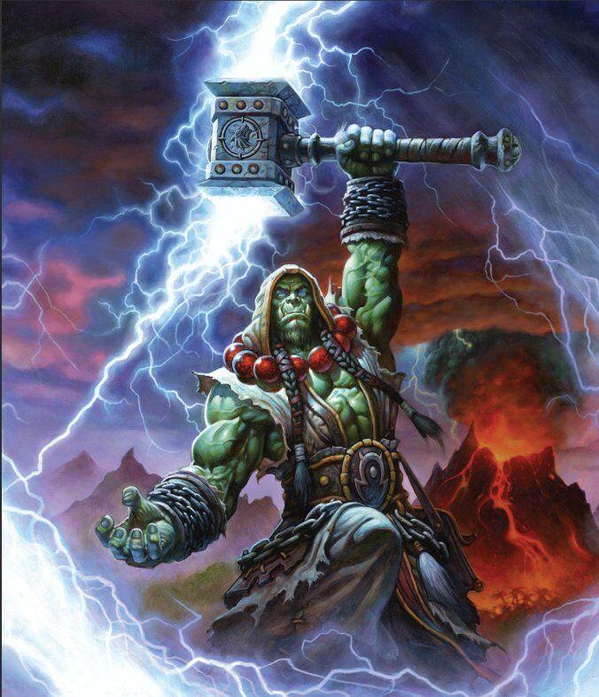
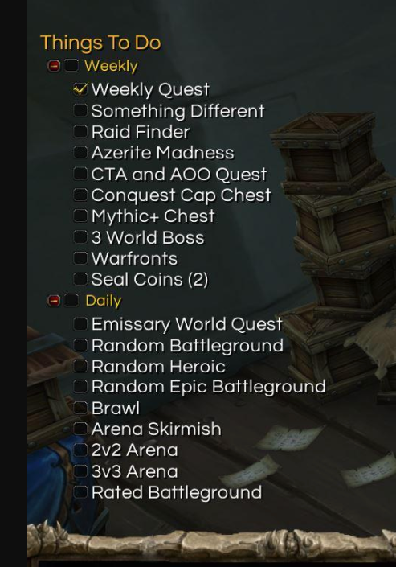

It's amazing how much time I've invested into a world that has no real tangible gains irl. For as much time as I've spent shooting frost bolts, I can barely throw a snowball. How did World of Warcraft train me to master something in their game, I can barely do in real life? And why do I let them?
I like to return to World of Wracaft as an example of how to live my life. It's not any particular character is a pargaon of greatness, though Thrall is a close surrogate.
That's ma boy.Thrall Wiki
What they've done is used the gamification model to weaponnize our abilities to be productive, and used it to keep us engaged doing the same tasks over and over again. And WE pay them to do it. Tom Sawyer would be proud. This will be a topic I return to time and again as I deconstruct it more, but what I'm talking about is the addication model and using time constrants, like dailies, pavlovian triggers, like level up noises and other forms of positive reinforment, and other psychological methods to keep us spending dozens, hundreds, thousands of hours playing World of Warcraft.
This is the start of a weekly blog post about how we can learn and use what Blizzard has been doing and taking back our own agency. Resturcting our lives into bite sized chunks so we can set our own quest lines. Using times and trackers to allocate portions of our day to accomplish our goals, and keep focused, leading to our own dailies. And finding fulfilliment in our own lifes, and generating that dopemaine boost to push us forward. Creat your own loot table, don't rely on a dice roll behind the scenes to dictate how your gonna spend the next 30 hours.
Isn't it time you learned how to craft your own world?